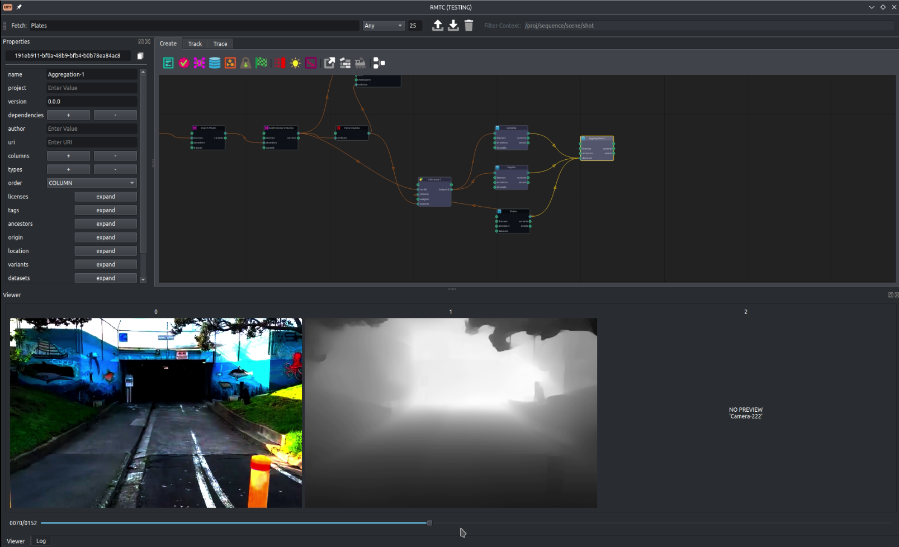
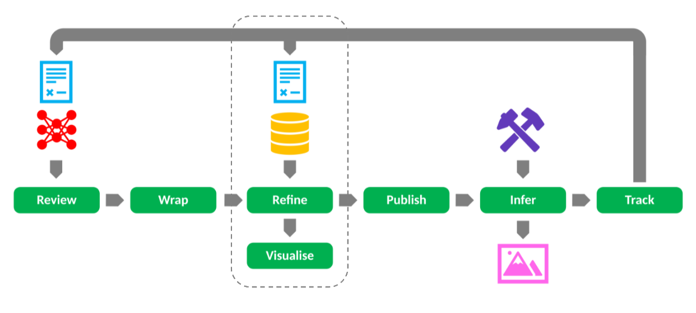
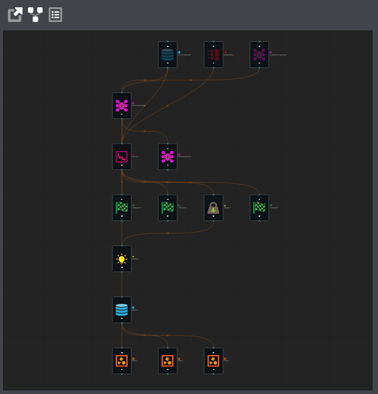
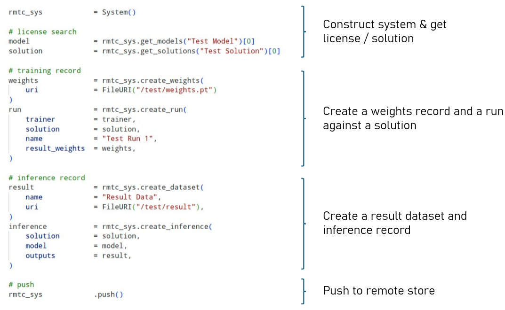

From Ingestion to DCC Inference
Ingest foundational models into the provenance graph, refine them on show-specific data, publish them to your asset management system in a standard transport format (PyTorch, ONNX, TorchScript), and invoke them from DCCs like Nuke or Griptape (WIP). The build-publish-import workflow records lineage at each step, so inferences remain traceable through the pipeline.
- Ingest external models with full metadata and license
- Fine-tune for show needs while tracking the parent model
- Publish to injected Asset Management pipelines
- In-DCC inference preserves weights and run lineage

Familar VFX Interfaces
A suite of purpose-built Qt & Python tools on top of the RMTC core: Ingestion and solution creation, Provenance tree traversal, a property & dataset inspector for viewing and editing artifact metadata. All tools talk to the same graph backend and use the same object model.
- Create Models, Datasets, and Solutions and connect
- Navigate provenance trees visually
- Inspector: view and edit artifact properties and dataset contents
- Kick off training & inference jobs on the wall

Indicative Licensing & Rights Information
Models and datasets can carry license & rights properties: permitted uses, excluded jurisdictions, required attributions and party information. RMTC surfaces this recorded metadata for review via reports and queries, so it can inform your own compliance process.
- Record permitted and excluded use cases per model, where known
- Record required parties and attributions
- Complementary AI policy for the RMTC project itself

Run Management & Monitoring
Submit training runs to local or distributed schedulers that wrap around your existing infrastructure, monitor progress in real time, and automatically create checkpoint and weight artifacts at each step. Every run is a first-class entity in the graph, linked to its Solution (problem definition), input Dataset, and output Weights — with full timestamp and environment metadata.
- Define Solutions to bring all project artifacts together
- Submit runs with environment and processor specifications
- Monitor training via GUI, halt, tweak and restart (WIP)
- Checkpoints and weights published as graph artifacts intended to remain immutable

Lineage Tracing
Every inference traces back through a provenance chain: from the model and its weights, through the training run and dataset, all the way back to the foundational models and source data. Artifacts are recorded in a queryable cypher graph database.
- Query any inference backwards through weights, checkpoints, runs, and datasets
- Track which versions of a model produced which outputs
- Review which models touched which data
- Export lineage as reports to support your own review

Training & Inference by Design
RMTC ships with a reference PyTorch implementation, but its core is abstraction-first. The Factory system uses fully qualified type names and YAML-driven registration to let you swap in Keras, TensorFlow, or proprietary frameworks without forking. Trainers, inferers, and schedulers are injected dependencies — facilities adopt what they need and extend the rest.
- PyTorch trainer included; Keras/TensorFlow pluggable
- Local scheduling today; OpenCue and Deadline support designed in
- Dataset loaders support EXR, USD, ONNX, and safetensors
- Custom process stacks for image transforms (color, channels, spatial)
